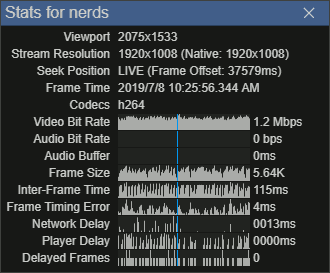
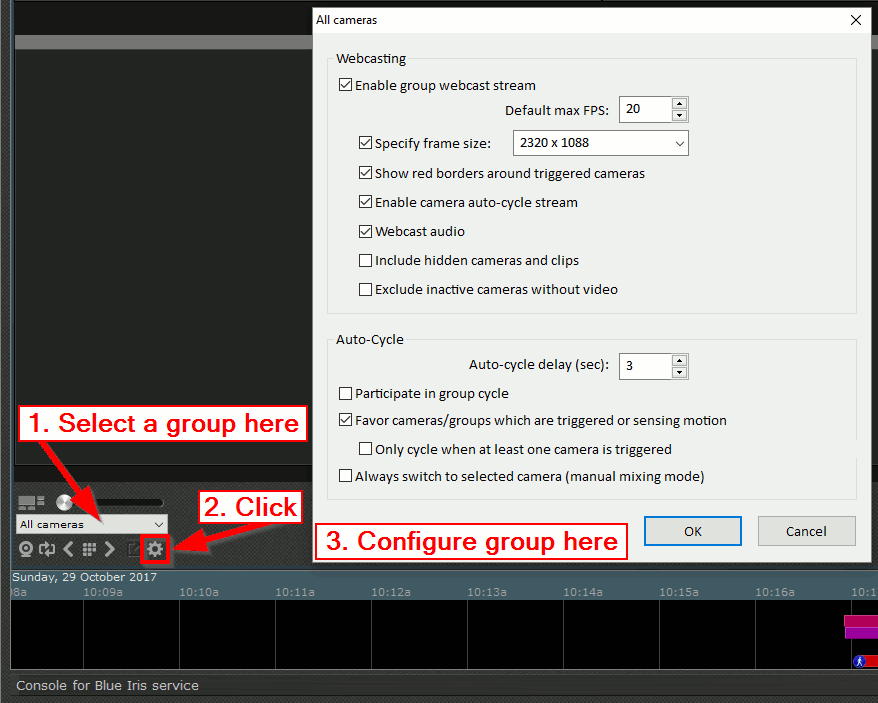
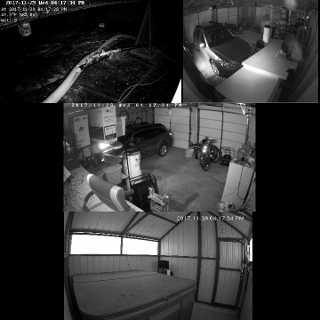
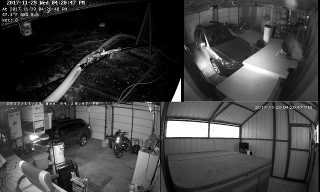
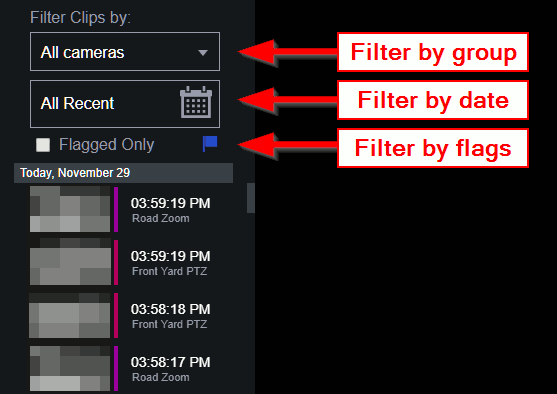

Please choose a section from the navigation menu above.
If you need support with UI3, the best place to go for help is the Blue Iris section of the IpCamTalk forum.
This interface was developed by community member bp2008 from IpCamTalk.
UI3 can stream video using two different compression methods: H.264 and Jpeg. H.264 is more efficient with network bandwidth, and usually achieves a higher frame rate, making it the most desirable choice in most circumstances. H.264 is the default streaming method in browsers which support it. Jpeg streaming is simpler and can be used in all browsers capable of running UI3.
UI3 can stream H.264 video if your browser supports it, otherwise you won't even see the option. You can check for H.264 compatibility by looking for H.264 items in the Streaming Quality dropdown list.
H.264 streaming has several drawbacks, however.
The three H.264 encoder profiles "Streaming 0", "Streaming 1", and "Streaming 2" are not configurable in UI3 directly. Instead, you must configure them in Blue Iris. Open Blue Iris Options > Web server tab > Advanced. Here, you can configure each of the encoder profiles.
Jpeg streaming is done by requesting Jpeg-compressed snapshots as quickly as possible. It is not very efficient with network bandwidth and it can't achieve high frame rates over the internet. However, being a simpler streaming method, it tends to "just work". Jpeg streaming is capable of extremely high resolutions and excellent image quality.
Audio playback is not available while streaming Jpeg snapshots.
Blue Iris can stream any camera or group using the HLS protocol. Though it is not core functionality, UI3 provides the ability to consume these streams.
HLS streaming uses HTML5 video APIs, which deliver greater efficiency and compatibility than UI3's default H.264 streaming method. Unfortunately, this induces video delay of at least several seconds, so HLS streaming is not used as a primary video streaming method.
HLS streaming is only available for live video, but it works with individual cameras and groups alike.
Right-click on any video stream and choose "Open HLS Stream". A special video player called Clappr will open in a dialog window.
If you right-click the HLS player, you have the option to "Open stream in New Tab". Opening an HLS stream in a new tab actually opens a different page called "livestream.htm".
One of the pages included with UI3 is "livestream.htm" which just plays an HLS stream from Blue Iris and does basically nothing else. The page takes a single URL parameter "cam" with the short name of the camera or group you wish to view. Example: livestream.htm?cam=index
If you omit the "cam" parameter, livestream.htm will attempt to load "index" (a.k.a. "all cameras" ).
Inspired by YouTube's feature with the same name, UI3 has a "Stats for nerds" panel which shows an assortment of details about the video player. This information can be useful for troubleshooting, but otherwise it is just fun to look at.
To access this panel, right-click on UI3's video player and choose the "Stats for nerds" option.

Several URL parameters can change UI3's startup behavior.
| Parameter | Effect | Example |
|---|---|---|
| maximize=1 | UI3 loads with the left and top control bars hidden. | ui3.htm?maximize=1 |
| tab=live | The "Live" tab is loaded. | ui3.htm?tab=live |
| tab=alerts | The "Alerts" tab is loaded. | ui3.htm?tab=alerts |
| tab=clips | The "Clips" tab is loaded. | ui3.htm?tab=clips |
| group=groupname | The group with the specified name is loaded. | ui3.htm?group=index |
| cam=shortName | The camera with the specified "Short name" is loaded. | ui3.htm?cam=porch |
Experienced web developers can extend UI3 with custom JavaScript and CSS.
Of course if you take the most obvious route and modify ui3.js and ui3.css files directly, you would have to re-apply your changes after every update! To solve this problem, UI3 attemps to load two files which do not exist in releases: ui3-local-overrides.js and ui3-local-overrides.css. You can create either or both of these files and place them in the ui3 subdirectory alongside ui3.js and they will be loaded after all the other script and style files, allowing you to conveniently override virtually any default functionality you wish, if you have the skills to do so.
For examples, see https://github.com/bp2008/ui3/wiki/Local-Overrides-Scripts-and-Styles
UI3 is unable to control your camera layout. To change the camera layout, you must drag cameras around in Blue Iris's local console.
The default group frame size may have a lot of empty black area, or the resolution may be lower than you would like. You can change the resolution of each group in Blue Iris's local console.

For best results, you should use frame dimensions that are multiples of 16. For convenience, here is a list of suitable multiples of 16 that you can copy from:


To view recorded video, you must use either the "Alerts" or "Clips" tabs at the top of the UI.
The "Alerts" and "Clips" tabs look similar, but are different in subtle ways. Clips may represent many triggered events or a continuous recording. Alerts, however, are treated as bookmarks into a clip.
You can filter the Alerts/Clips list by camera, group, date, and flag state.
To filter by camera, simply maximize that camera by clicking on it in the main video area. To filter by other criteria, use the filter controls above the Alert/Clip list.

If you don't see the filter controls, that means you have collapsed them by clicking on the "Filter Clips by:" text. Click the "Filter Clips by:" text again to expand the filter controls section.